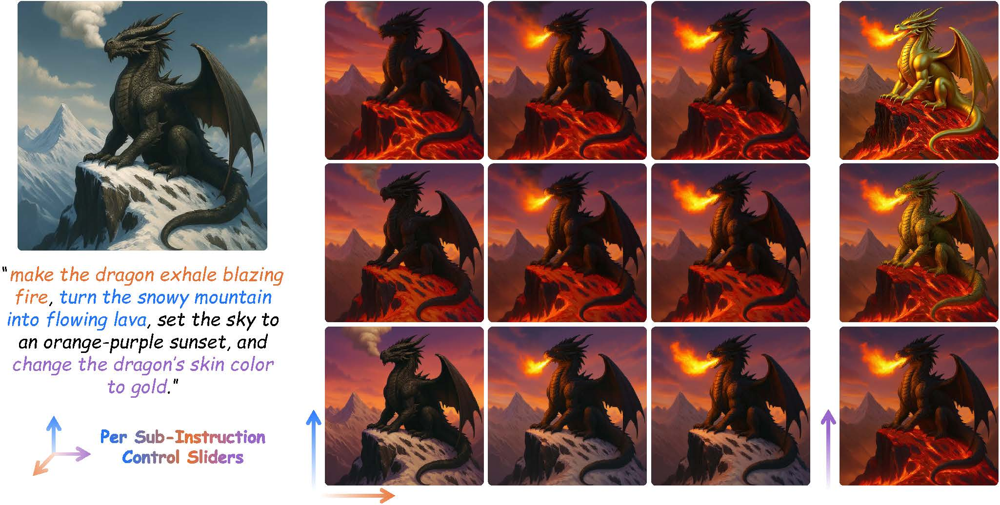
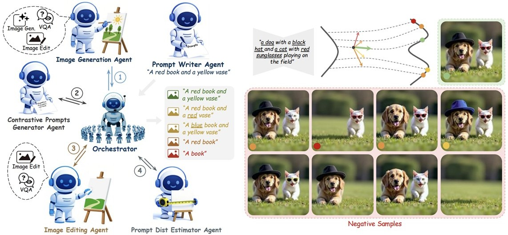
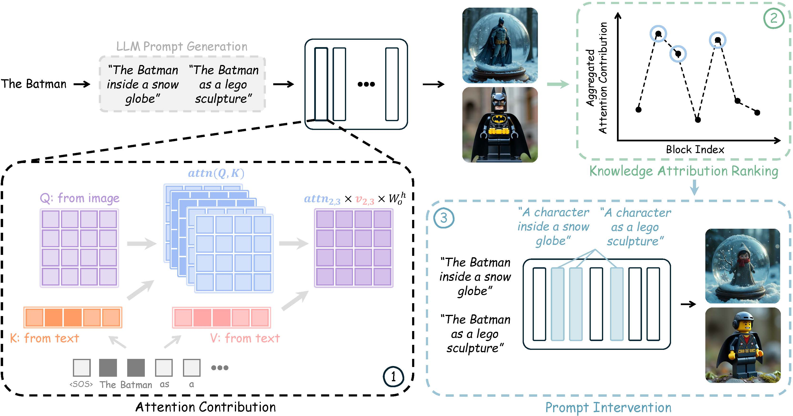
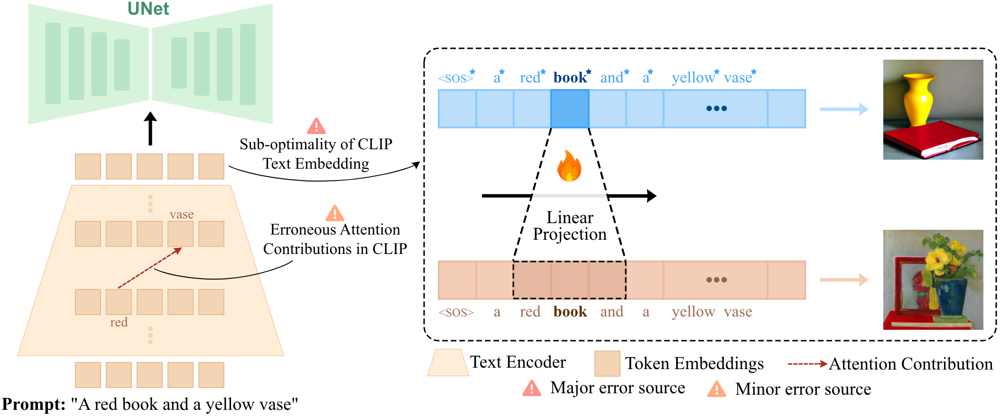
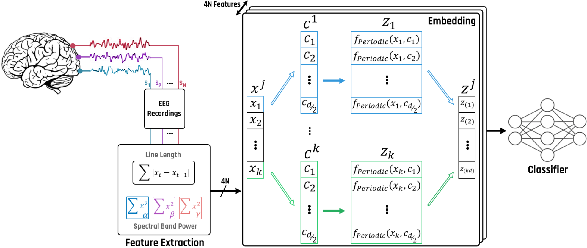
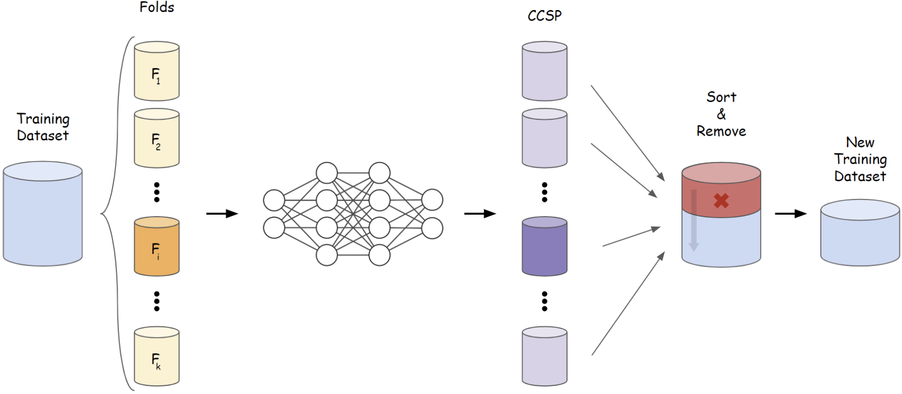
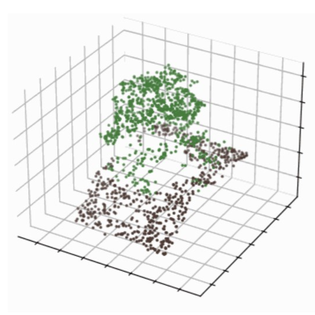

Our paper introduces a continuous wavelet transform (CWT)-based EEG feature representation and a CNN classifier for automatic emotion recognition. It also presents effective channel- and scale-selection strategies that reduce the number of required EEG channels and computational complexity while maintaining high classification accuracy.

Our paper introduces feature-level and decision-level ensembles of pretrained convolutional neural networks for multi-class diagnosis of COVID-19 and pneumonia from chest X-ray images, achieving 96% accuracy in the three-class setting.

Our paper introduces an efficient CNN-LSTM architecture with self-attention that learns salient spatial and temporal EEG features without requiring a separate handcrafted feature-extraction stage.

Our paper presents a stacked bidirectional LSTM architecture that learns discriminative information directly from EEG time series for automatic valence and arousal classification.

Our paper combines wavelet decomposition and node reconstruction to preserve multi-resolution EEG information in a structured representation for convolutional neural network-based emotion classification.

Our paper introduces DenseLinkNet, which combines a DenseNet-201 encoder with a LinkNet decoder for automated segmentation of corneal endothelial cells and achieves a Dice score of 76.82%.